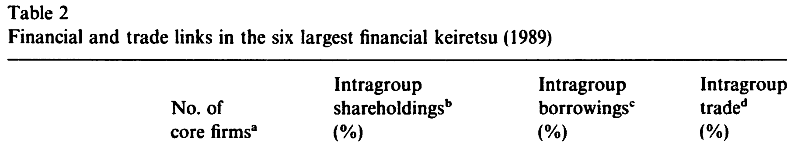
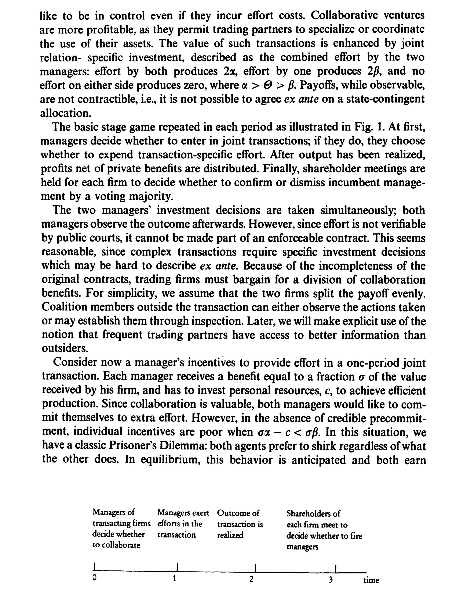
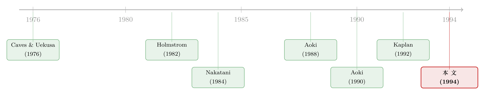

把老板当成人质：日本财团里那台「会换挡」的治理机器
本文读的是 Berglöf & Perotti (1994, JFE)：日本财团 (keiretsu) 里那张令人眼花缭乱的「债权与股权交叉持股」网，并不是一堆历史遗留的所有权怪癖，而是一台相机抉择的治理机器 (state-contingent governance)——平时，经理们以「交叉持股的联盟」互相挟持、互相监督，谁偷懒就被踢出局；一旦公司陷入财务困境，控制权便自动「换挡」，交到主银行 (main bank) 手里，由它主持重整。整套资本结构——交叉持股、高杠杆、弥散的商业信用——是一个被设计出来、环环相扣的整体。
1 一个没有「敌意收购」的世界，凭什么把老板管得服服帖帖？
先从一个我们都默认的常识说起。
在英美的资本市场传统里，投资者被功能性地看作公司的「专业外人」：股东只持股，债权人只持债；供应商和客户之间或许会互相赊账，但很少彼此持股。分工清清楚楚，井水不犯河水。出了问题怎么办？市场上有一只「看得见的手」——敌意收购 (hostile takeover)。股价跌得够惨，就会有人来把公司买下、把无能的管理层赶走。这是英美治理体系的终极纪律。
可是把镜头转到日本，你会撞见一幅几乎相反的图景。
绝大多数日本大公司都隶属于某个财团。Nakatani (1984) 数过：1981 年东京证券交易所一部的 859 家公司里，有 719 家（84%）可被视为某个财团的成员；光是三井、三菱、住友、富士、第一劝业、三和这六大集团，就囊括了其中 546 家（76%）。这些集团彼此交叉持股、互相赊账、互相借贷，主银行盘踞在每家成员公司的借款里。到 1990 年，财团内部的相互持股占了市场总量的 26%，相互提供的融资占了 37%。
奇怪的就在这里：日本几乎不存在敌意收购市场——可经理人的更替对业绩之差却极其敏感，Kaplan (1992) 甚至发现，这种敏感度恐怕比美国还高。更微妙的是，Kaplan and Minton (1993) 注意到：当一家公司股价表现糟糕、但还没到财务困境时，主银行和其他成员公司会一起往这家公司董事会里派外部董事；可一旦它真的开始亏损，就只剩主银行还在派人了。
于是悬念浮出水面：在一个没有收购威胁的世界里，到底是谁、用什么机制，把日本公司的老板管得服服帖帖？
2 交叉持股：是互相监督，还是「互相包庇」？
接着，一个自然的问题是：那张交叉持股的网，难道不该是「互相包庇」的温床吗？
直觉上，你持有我的股票、我持有你的股票，我们就成了利益共同体——出了事大家一起捂盖子，最舒服的均衡是谁也不为难谁，集体过「平静的日子」(quiet life)。这恰恰是英美舆论指责财团「排外、低效、相互输送」的核心论点。
本文的洞见，是把这张网的逻辑倒过来看。
设想一组分处不同行业、却存在长期合作关系的公司，彼此交换股权，从而创造出相互的投票权。关键的一步在于：当一家公司的控制性股份被集团里其他公司共同持有时，一种可信的相互承诺就建立起来了。把投票权汇集 (pool) 在一起，这个联盟就能对任何一家成员公司的重大决策行使控制权，并确保一个行为机会主义的经理被解雇或降职。
用本文的话说：经理人的控制权，被当作「人质」抵押在了财团联盟手里，以此担保他对高效、合作行为的承诺。
这就是为什么日本经理人「怕」。被降职、乃至被驱逐，对个人而言代价极高：财团经理的薪酬（含私人收益）与现货市场工资之间差距悬殊；更要命的是，日本经理通常一辈子待在同一家公司，技能高度「公司专用化」，而中途跳槽的中年管理人才市场几乎不存在（这也正是 Aoki (1988)、Sheard (1994) 用「风险分担」解释财团时强调的特征——但在本文看来，它恰恰放大了「驱逐威胁」的执行力）。
这里区分了两层控制：公司控制权 (corporate control) 是「谁说了算」的法定权力；管理控制权 (managerial control) 是经理人坐在那个位置上享有的租金与私利。财团的机制，正是用前者去要挟后者。
3 真正关键的一步：请一个「买不通」的外人进来
可是，问题没完。一个能自己解雇自己人的经理联盟，凭什么不会退化成一个「谁也别动谁」的合谋集团？
本文给出的答案，是这条逻辑链里最关键的一环：必须引入一个无法被联盟收买的第三方。
这个第三方就是主银行。机制是这样设计的——为了堵死合谋，联盟里的公司主要靠短期债务从主银行那里融资。这样一来，盈利一旦变差，公司就会陷入财务违约，控制权随之从「交叉持股的相互治理」转移到主要贷款人手里。而主银行自己是用短期活期存款融资的，这就使它也没有动力去参与合谋性的「壕沟自保」(entrenchment)：它背后还站着随时可以抽身的存款人，以及在同一行业里虎视眈眈的其他财团竞争者。
这正是 Holmstrom (1982) 在「团队中的道德风险」里提出的预算破坏者 (budget-breaker) 的角色：当团队成员可能合谋偷懒时，引入一个对剩余索取有要求、却又不分享合谋收益的第三方，就能打破低效的均衡。高杠杆——而且是集中在一个金融中介手里的高杠杆——就扮演了这个角色。
到这里，模型已经能同时「解释」财团的两个看似矛盾的特征了：既要交叉持股（横向的相互监督），又要高杠杆且债权集中于主银行（纵向的、可置信的违约威胁）。前者管平时，后者管危机。
4 于是反转：杠杆是把双刃剑，得给它配一套「预警系统」
然后，反转出现了。
高杠杆固然能威慑合谋，但它本身也危险。当一家公司逼近财务困境时，债权人随时可能接管控制权——这意味着，过高的杠杆反而会削弱联盟「解雇管理层」这一威胁的有效性：反正快违约了，控制权迟早是银行的，联盟手里的「人质牌」就贬值了。这会诱发新的道德风险。
怎么办？联盟需要尽早得到关于潜在破产的预警，并协调一致地行动。本文的精妙之处，在于它让商业信用 (trade credit) 也加入了这台机器：财团成员之间互相提供贸易赊账，把「贸易关系里的信息」和「财务关系里的信息」结合起来，去评估一家公司的整体表现。
但贸易债权人凭什么愿意如实、及时地上报坏消息？于是最后一块拼图扣上了：主银行向贸易债权人提供财务担保，自己承担贸易信用上的大部分损失。正因为亏损主要由银行兜着，贸易伙伴才有动力把异常情况报上来；这又反过来让银行能在财务困境的更早阶段介入。等到违约真正发生、需要重整时，银行手里已经高度集中了债权，又在小额债权的银团化中居于枢纽——它能压住债权人之间的「搭便车」与互相掣肘，迅速完成重整。作为回报，它成了残余价值索取人 (residual claimant)，从而获得了主动作为的正当激励（这一信息思路呼应 Harris and Raviv, 1990）。
所以，本文真正想说的那一个核心是：财团那张让人眼花的交叉持股—高杠杆—商业信用之网，不是三件孤立的事，而是一台精心咬合的相机治理机器。它在「相互治理」与「等级制（主银行主导）治理」之间随状态切换——平时是横向的人质机制，困境时是纵向的银行接管。而这台机器之所以有别于一个单纯的「长期交易声誉机制」(Perotti, 1992)，正在于它握着那张谁都不敢小看的底牌：丢掉管理控制权的威胁。
（关于「债务被用来约束经理、而当有人替你盯着时这种约束如何变化」这条线，可参见《债，是用来「逼」老板的——可如果有人替你盯着，还需要逼吗？》；关于「现金为何堆在日本公司账上、被强势主银行『劝』出来」的后续证据，可参见《现金为什么堆在日本公司的账上？》。）
5 一组数字：把住友拆开来看
为了不让上面的机制听起来像空中楼阁，本文先铺了一层「典型事实」。
财团各自的凝聚度并不一样。三家直接脱胎于战前财阀 (zaibatsu) 的集团——三菱、三井、住友——内部联系最紧；富士、三和、第一劝业则松散些 (Hoshi and Ito, 1991)。以最古老、最集中的住友为例：1937 年家族控股公司改制为股份公司时，住友家族族长一人就持有 98% 的股份；战后财阀被解散、家族股权被没收变卖，企业们一度散沙化、彼此激烈竞争，可在 1950—60 年代，旧财阀的银行又把它们重新「织」了回来。住友的白水会 (Hakusui-kai) 从 1951 年的 16 家扩展到今天约 80 家公司、其中 20 家进入总裁会。
数字层面，1989 年六大集团的内部持股比例从 19% 到 45% 不等，三菱、住友最高；若只算前 50 大股东，平均集团持股约 35%；Gerlach (1992) 估计前 20 大股东的内部持股占到 33%–74%。主银行单家通常持股 2%–5%（5% 是法定上限），却向集团内 98% 的成员公司放贷。商业信用更是日本特色：1970—1985 年间，贸易赊账贡献了非金融企业总融资的 18%，而同期美国、西德分别只有 8.4% 和 2.2% (Mayer, 1990)。下表是六大集团财务与贸易联系的一张全景。

Table 2
还有一个被模型「预言」、又被数据印证的细节：一个集团很少在同一个行业里放两家核心成员。住友 16 家非金融核心公司里，有色金属类放了三家、化工放了两家，但主营产品线毫无重叠。这和模型的含义完全一致——同行业内多放一家，会削弱既有成员合作的动力、引发内斗，所以联盟「每个行业至多一家」。
6 模型：把机制写成一场无限重复博弈
本文第 3 节给出了一个文体化 (stylized) 的集体执行模型。设有 N+1 家公司（i = 1, …, N+1）和 n 名经理（j = 1, …, n），且 n > N+1——潜在经理比职位多。这一条不起眼的设定其实至关重要：正因为「想坐这个位置的人，比位置多」，被驱逐的威胁才咬得动人。每家公司由一组专用资产刻画，其资本结构定义了收益与控制权的分配。
阶段博弈的时序如下图。

Figure 1: Timing of events in the stage game
把模型的灵魂提炼出来，它本质上是一场无限重复博弈 (infinitely repeated game)：经理之间通过交叉持股与商业信用相互监督，合作由「失去控制权」的威胁来维系。
第一步，写出合作的自我执行条件。 记一名经理每期通过合作能享有的管理租金为 B（财团薪资加上可观的私人收益），贴现因子为 δ。如果他这一期行为机会主义（偷懒、谋私、过「平静日子」），能一次性多捞到 G；但一旦被联盟通过相互监督察觉，他就被解雇或降职，今后只能靠驱逐后的现货市场工资 w 度日。那么，这个经理不会偏离合作，当且仅当：
$$ G \;\le\; \frac{\delta}{1-\delta}\,(B - w) $$
直觉再清楚不过：一次性的偷懒诱惑 G，不能超过你被赶出局后将永远损失掉的那份管理租金 B - w 的贴现值。 而我们已经知道，在日本，财团薪资远高于现货工资、中年经理跳槽市场几乎不存在——这恰恰意味着 B - w 很大，右边的「悬崖」很深，威慑很强。把这台机器的核心方程拆开标注如下：
这里的方程是把本文机制提炼成的标准重复博弈自我执行条件，用以揭示「驱逐威胁为何有效」这一核心直觉；论文原文的形式化设定更细（区分公司控制权与管理控制权、并对偏离与监督技术做了更具体的刻画）。我只忠实复现机制逻辑，不替作者杜撰未在正文中出现的具体方程编号。符号 δ 为贴现因子。
第二步，引入预算破坏者排除坏均衡。 和所有无限重复博弈一样，这里存在多重均衡，其中一些是低效的——相互持股可能不去施加纪律，反而生出相互壕沟自保。本文证明：一个足够高、且集中在某个金融中介手里的杠杆水平，能够排除掉这些低效的壕沟均衡。这正是 Holmstrom (1982) 解里的预算破坏者：第三方（主银行）对剩余有索取、却不分享合谋租金，于是「大家一起捂盖子」不再是均衡——因为捂到最后会触发违约，而违约就意味着把控制权交出去。
第三步，处理困境下的信息与协调。 当公司经营糟糕、清算或重整变得很可能时，预期控制收益下降，纪律威胁的有效性也随之削弱。模型据此非形式化地论证：成员公司用相互之间的债务（商业信用）去提前获取坏消息（呼应 Harris and Raviv, 1990）；而一旦违约揭示出重整的需要，金融中介对债权的集中持有、以及它在小额债权银团化中的角色，会带来一次迅速的重整，缓解债权人之间的搭便车问题。
至此，模型把财团的整套资本结构——相互持股、历史性的高杠杆、弥散的相互商业信用——统一在「相机分配的控制权」这一根弦上：主银行只在财务困境时才占据主导，平时则退居幕后。这也是为什么本文说自己提供的是那块「缺失的环节 (missing link)」——一个把合作真正执行下去的、显式的治理机制。
7 文献脉络：从「财团是什么」到「财团为什么这样」
把这条研究线索捋一捋，会看到一个从「描述」走向「机制」的过程。
首先是早期的功能主义解释：Caves and Uekusa (1976) 强调财团便利成员间的双边贸易、鼓励对关系专用资产的投资；Goto (1982) 看重它在信息交换与研发协调上的作用；Sheard (1986) 则关注困境企业的协调重整；Aoki (1988) 与 Sheard (1989, 1994) 进一步指出它能支撑相互的收购防御与风险分担。这些工作各自抓住了财团的一个侧面，却像本文所说，缺了一根把它们串起来的「主线」。
接着是实证的累积：Nakatani (1984) 用大样本发现财团企业更高杠杆、盈利更低但更稳定、财务困境成本更低；Hoshi, Kashyap, and Scharfstein (1990b)、Hoshi and Ito (1991) 深化了这条证据；Kaplan (1992) 与 Kaplan and Minton (1993) 则揭示了「无收购市场、却高度业绩敏感」的更替模式，以及主银行与成员公司在困境不同阶段的差异化干预。Prowse (1992) 由此提出日本存在两套治理体系：独立公司一套，财团成员另一套。

然后，理论侧最直接的「邻居」是 Aoki (1990) 与 Aoki, Patrick, and Sheard (1994) 的主银行状态依存观：银行平时被动、企业一旦陷入困境便接管重整。而本文所处的位置，恰恰是补上他们的「事中」一段——把焦点从「困境时银行接管」前移到「非困境时，债权与股权交叉持股如何支撑相互监督与执行」。它借用了 Holmstrom (1982) 的预算破坏者、Williamson (1983) 的「人质」契约思想、Perotti (1992) 对纯声誉机制的比较，最终把财团刻画成一个在「相互治理」与「等级治理」之间换挡的相机结构。
这条「集团—银行—治理」的线，后来在公司金融里开枝散叶。关于「内部资本市场把好钱偷偷输送给坏项目」的成本，可参见《拆掉财阀，是好事还是坏事？》；关于把美国机构持股类比为「美式财团」的争论，可参见《the-american-keiretsu-and-universal-banks-investing-voting》；而把债务当作纪律工具这条更老的主线，则绕不开 Jensen 的自由现金流（《现金为什么一定要「还」出去？》）与《重读 Jensen 和 Meckling 五十年》。
8 评论与延伸（Q&A + 研究方向）
(a) 几个可能的疑问
Q：交叉持股到底是「监督」还是「合谋」，模型怎么能两头都解释？
这正是本文的张力所在，也是它最聪明的地方。它没有断言交叉持股必然带来纪律——恰恰相反，它承认相互持股可能退化为相互壕沟自保（多重均衡里的坏均衡）。真正负责把坏均衡排除掉的，不是持股本身，而是集中于主银行的高杠杆这个预算破坏者。换言之：股权管「平时的相互监督」，债权管「不让大家合谋」，两者缺一不可。
Q：这和 Aoki (1990) 的主银行理论有什么实质区别？
Aoki 等人的状态依存观主要刻画「困境时银行接管重整」。本文的增量在「非困境」那一段：它解释了在公司没出事、银行还在被动观望时，是什么在约束经理——答案是交叉持股联盟的相互监督与驱逐威胁。本文自称提供「缺失的环节」，指的就是这个事中的、显式的执行机制。
Q：既然没有敌意收购，凭什么相信经理真的会被「换掉」？
这是经验上最硬的支撑点。Kaplan (1992) 显示日本经理更替对业绩高度敏感；Kaplan and Minton (1993) 进一步发现，业绩差但未困境时主银行与成员公司一起派外部董事，亏损时只剩主银行派人。这种「分阶段、分主体」的干预模式，与模型「相互治理 → 等级治理」的换挡几乎严丝合缝。
Q：模型预测「每个行业至多一家成员」，这靠谱吗？
数据上相当吻合。住友 16 家非金融核心公司里，虽有三家落在有色金属、两家落在化工的大类，但主营产品线互不重叠。模型的逻辑是：同业多放一家会削弱既有成员合作动力、引发内斗，因而联盟倾向于行业不重叠、且偏好规模相当的成员以维持「平起平坐」而非等级关系。
Q：这套机制为什么需要「股权」这种没有到期日的索取权，而不是长期合同？
因为整台机器依赖一个长期稳定的所有权结构——持续互动是合作得以自我维系的前提。股权恰是一种没有终点的投票权，与财团持股结构惊人的稳定性相符（住友内部交叉持股 1955 年
21%→ 1970 年29%→ 1981 年37%；即便经历 1980 年代的金融变局，也只从25%微降到22%）。这也解释了为何集团偏爱带优先认购权的折价增发、以及主银行会在成员抛售持股时按比例「接盘」——都是为了维持控制权的稳定分配。
Q：这是一篇 1994 年的论文，去管制和银行持股上限收紧之后，结论还成立吗？
作者自己很诚实：他们刻意把分析「裁剪」到财团的历史结构上。1980 年代的金融自由化、银行持股份额的更严限制、企业流动性的上升，都改变了集团内部的平衡。但有意思的是，结构本身异常稳定——整个 1980 年代，集团内部借款的重要性大体未变。这恰恰是「相机治理」框架的一个旁证：一台为长期稳定而设计的机器，本就不该轻易散架。
(b) 几个可能的研究问题与提案
1. 把「相机治理」搬到公司债违约的微观证据上检验。 【经济故事】本文最硬的可检验含义是：控制权随财务状态「换挡」。如果能在公司债违约/重整事件里，观察到控制权确实在某个阈值附近由「股东/联盟」交到「主要债权人」手里，就能把这台机器从模型变成数据。 【可行性】中。需要带契约违约 (covenant) 触发信息的债券与贷款层面数据（如 DealScan + 重整事件），以违约/契约触发为「断点」做事件研究或断点回归。难点在于阈值往往内生、且重整谈判不可观测；但跨发行人、跨条款的异质性可作识别杠杆。
2. 主银行担保如何重塑商业信用网络的信息含量。 【经济故事】模型的精髓之一，是主银行替贸易债权人兜底损失、从而「买来」如实上报。这预测：有强主银行担保的供应链，坏消息传导得更早、更准。 【可行性】中偏低。理想数据是企业间应付/应收账款的细粒度网络加银行关系标识——在日本历史数据里稀缺（本文也抱怨「商业信用统计无法区分财团与独立企业」）。可退而求其次，用现代供应链数据库 + 主银行关系做近似，识别上仍有内生性挑战。
3. 外资进入对「人质式」治理的侵蚀。
【经济故事】整台机器依赖控制权的长期稳定与「内外有别」。当外资持股上升、交叉持股松动，驱逐威胁 B - w 的可置信度会下降。一个自然的问题是：外资进入是否系统性削弱了这类集团的内部纪律、并改变其债务定价？
【可行性】高。日本/东亚有持股结构面板与外资持股的时间变化，可用持股上限放开等准自然实验做双重差分，结果变量取经理更替敏感度、信用利差、或交叉持股比例。与外资持有人这条线天然契合。
4. 「无收购市场」下的高管租金 B - w 究竟有多大。
【经济故事】本文的威慑力全押在 B - w（财团薪资与私利相对现货工资的溢价）上，但它只是被定性地断言「很大」。把这个租金结构性地估出来，就能直接量度这台机器的「咬合力」。
【可行性】中。需要高管薪酬 + 离职后去向（被降职/调往子公司）的追踪数据，借鉴控制权私利结构估计 (structural estimation of private benefits of control) 的思路。日本历史数据可得性是主要约束。
5. 把财团治理与信用市场流动性挂钩。 【经济故事】如果主银行通过债权集中与银团化压住了债权人间的协调失灵，那么财团成员的债券在压力时期是否更不易「火线甩卖」、流动性更稳？ 【可行性】中。需要日本公司债的成交与持有人数据，识别上可比较财团成员与独立企业在系统性冲击下的流动性差异。与公司债流动性这条线契合，但日本债券微观数据的覆盖是现实瓶颈。
9 我的判断
先说贡献。这篇论文最漂亮的地方，是它没有把财团的复杂结构当成一堆需要逐项「找理由」的特征，而是用一个机制把它们统一了起来：交叉持股提供横向的相互监督，集中的高杠杆充当预算破坏者排除合谋，商业信用加主银行担保构成预警与协调系统——平时横向、困境纵向，控制权随状态换挡。它给 Aoki 的主银行理论补上了「事中执行」这块缺失的环节，且每一个零件都对得上一条文体化事实（高杠杆、债权集中、每行业至多一家、持股结构的超稳定）。作为一篇纯理论 + 文体化事实的论文，它的「自洽度」是少见的。
再说担忧。它本质上是一个「能解释一切」的框架，而非一个被识别出来的因果命题。 模型是文体化的、是「合理化 (rationalize)」既有结构，论文里也坦言关于集团内部贸易的信息「很有限、官方统计质量很差」。这意味着它的许多关键含义——尤其是 B - w 的大小、主银行担保对上报的因果作用——基本停留在定性断言层面，没有被结构性地估计或用准实验识别。无限重复博弈的多重均衡更是一把双刃剑：当一个理论既能解释「监督」又能解释「合谋」，我们就该追问，是什么外生变化能让它做出可证伪的预测（这正是它和「能解释一切因而什么都证伪不了」之间的一线之隔）。
后续我最想看到的，是把这台「换挡机器」搬到可识别的微观数据上：用契约违约触发当断点，看控制权是否真的在阈值附近易手；用外资进入或持股上限放开当自然实验，看驱逐威胁被侵蚀后、经理更替敏感度与信用利差如何变化。三十年过去，财团本身已大为不同——但「用债权集中去排除合谋、用相机控制权去执行合作」这个想法，对今天理解集团企业、关系型银行、乃至外资持有人如何改写一国信用市场，依然是一把好用的尺子。
参考文献
- Aoki, M. (1988). Information, Incentives, and Bargaining in the Japanese Economy. Cambridge University Press.
- Aoki, M. (1990). Toward an economic model of the Japanese firm. Journal of Economic Literature 28(1), 1–27.
- Aoki, M., Patrick, H., & Sheard, P. (1994). The Japanese main bank system: An introductory overview. In The Japanese Main Bank System. Oxford University Press.
- Berglöf, E., & Perotti, E. (1994). The governance structure of the Japanese financial keiretsu. Journal of Financial Economics 36(2), 259–284.
- Caves, R. E., & Uekusa, M. (1976). Industrial Organization in Japan. Brookings Institution.
- Goto, A. (1982). Business groups in a market economy. European Economic Review 19(1), 53–70.
- Harris, M., & Raviv, A. (1990). Capital structure and the informational role of debt. Journal of Finance 45(2), 321–349.
- Holmstrom, B. (1982). Moral hazard in teams. Bell Journal of Economics 13(2), 324–340.
- Hoshi, T., & Ito, T. (1991). (work on keiretsu cohesion and shareholding measures, cited in the paper).
- Hoshi, T., Kashyap, A., & Scharfstein, D. (1990b). The role of banks in reducing the costs of financial distress in Japan. Journal of Financial Economics 27(1), 67–88.
- Kaplan, S. N. (1992). Top executive rewards and firm performance: A comparison of Japan and the United States. Journal of Political Economy 102(3), 510–546.
- Kaplan, S. N., & Minton, B. (1993). Appointments of outsiders to Japanese boards: Determinants and implications for managers. Working paper.
- Nakatani, I. (1984). The economic role of financial corporate grouping. In M. Aoki (ed.), The Economic Analysis of the Japanese Firm. North-Holland.
- Perotti, E. (1992). Cross-ownership as a hostage exchange to support collaboration. Managerial and Decision Economics 13(1), 45–54.
- Prowse, S. D. (1992). The structure of corporate ownership in Japan. Journal of Finance 47(3), 1121–1140.
- Sheard, P. (1989). The main bank system and corporate monitoring and control in Japan. Journal of Economic Behavior & Organization 11(3), 399–422.
- Williamson, O. E. (1983). Credible commitments: Using hostages to support exchange. American Economic Review 73(4), 519–540.